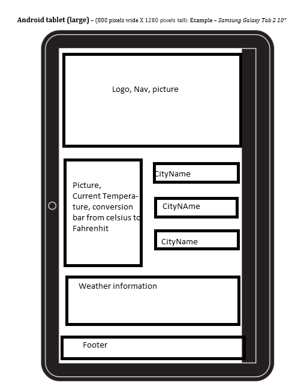
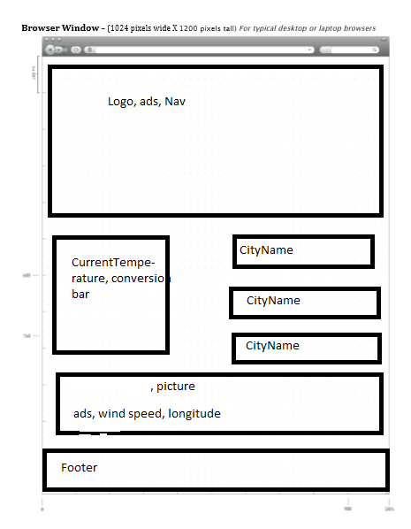
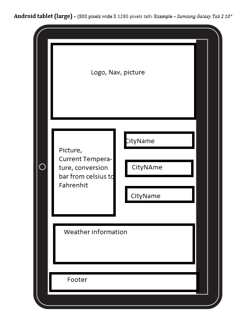
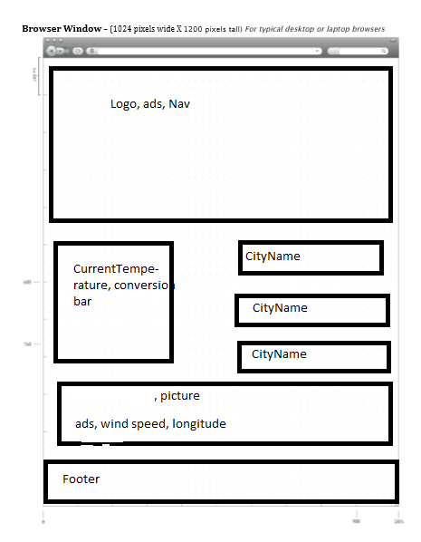

The purpose of this web site is to provide accurate temperature for various audiance. The majority of which will be regular citizens, pilots, military, media. Also the site will provide a conversion chart Celsius to Fahrenhiet and back. It is going to be usefull for people travaling the world. The web page will provide temperature information for every hour of a day as well as wind speed, longitude, latitude and even more.
This is going to be achived through a constant information update. Conversion chart is going to be made through a Python script. All the information is gather and stored in one file called weather.json.
 


